📖 Đã dịch sang tiếng Việt. Thuật ngữ chuyên môn giữ tiếng Anh — rê chuột để xem nghĩa (tooltip).
Brush Libraries
Chỉnh sửa, sắp xếp và chia sẻ cọ trong Procreate.
Giao diện
Được sắp xếp theo các nhóm chủ đề, thư viện cọ của Procreate cung cấp nhiều loại cọ khác nhau cho các quy trình sáng tác nghệ thuật đa dạng.
Truy cập cọ của bạn
Được mở bằng cách chạm hai lần vào Paint, Smudge hoặc Erase, thư viện cọ hiển thị các bộ cọ (brush set) ở bên trái và các cọ thuộc bộ đang hoạt động ở bên phải.
Bộ cọ (Brush sets)
Bảng bên trái của thư viện cọ liệt kê các bộ cọ mặc định được sắp xếp theo chất liệu và phong cách.
Cuộn danh sách để duyệt tất cả các bộ cọ, và chạm vào một bộ để xem các cọ bên trong nó ở bên phải. Khi bạn chọn một bộ cọ, biểu tượng của bộ đó sẽ sáng màu xanh.
Bảng bên phải của thư viện cọ liệt kê tất cả cọ sẵn có trong bộ cọ đang được chọn.
Chạm vào một bộ cọ để duyệt các cọ bên trong. Danh sách cọ hiển thị tên của từng cọ và bản xem trước của nét vẽ mà nó tạo ra. Cuộn danh sách để di chuyển, chạm vào một cọ để chọn, sau đó chạm lên khung vẽ để bắt đầu vẽ.
Tạo và nhập cọ cùng các bộ cọ
Chạm vào đây để mở một menu cho phép bạn tạo cọ hoặc bộ cọ mới từ đầu, hoặc nhập các cọ tùy chỉnh.
Tap 'Create new' set to create a new brush set above your current brush sets, in the current brush library.
Tap 'Create new brush' to create a new brush and open up the Brush Studio.
Tap 'Import from Files' to bring in a brush, set or library from the Files app.
If you tapped 'Create new brush', you'll be sent to the Brush Studio to customize your new brush. You can also access Brush Studio for existing brushes by tapping on them to select them, then tapping on them again.
Brush Studio mang đến cho bạn toàn quyền kiểm soát từng khía cạnh của cọ. Tại đây bạn có thể thay đổi hình dáng, hạt, hành vi, màu sắc, độ phản hồi, độ đục, độ thon nhọn và rất nhiều thứ khác. Với hàng trăm thiết lập, bạn có thể tạo ra vô số tổ hợp. Hoặc bắt đầu từ con số không và xây dựng những công cụ nguyên bản phù hợp với cách làm việc của mình.
Tìm hiểu thêm về việc thay đổi thiết lập và thiết kế cọ trong Brush Studio.
Truy cập các thư viện cọ của bạn
Có hai cách để truy cập các thư viện cọ. Bạn có thể chụm (pinch) vào trong tại giao diện Brushes:
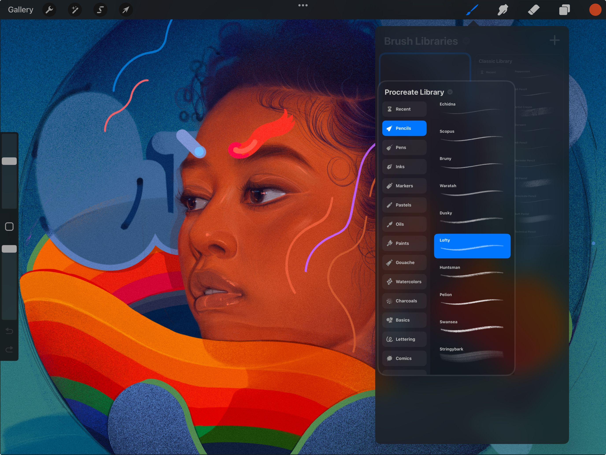
Hoặc bạn có thể chạm vào tên thư viện hiện tại, và chọn 'Back to libraries':
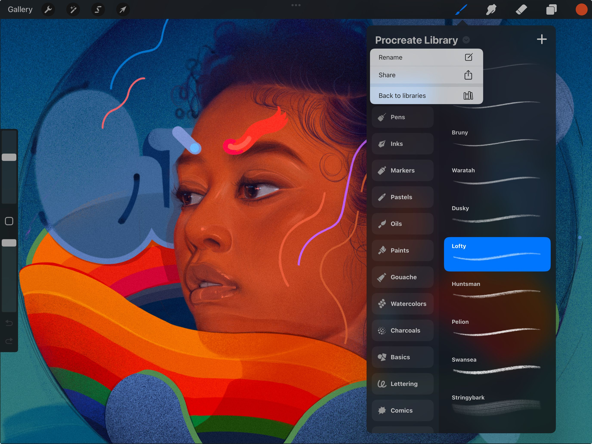

Hãy xem video bên dưới nếu bạn cần minh họa về hai cách khác nhau để truy cập thư viện cọ:
Sắp xếp thư viện cọ trong Files
Thư viện cọ hiện được lưu trong ứng dụng Files, tại On My iPad → Procreate → Brushes hoặc iCloud Drive → Procreate Brushes.
Trong các thư mục chính này, các thư mục con chính là các thư viện cọ của bạn:
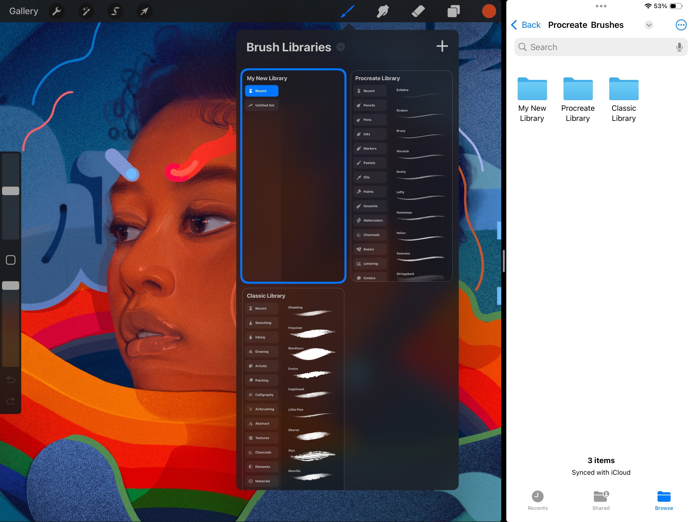
Các thư mục bên trong thư mục thư viện cọ chính là các bộ cọ trong thư viện đó, còn các tệp bên trong mỗi thư mục chính là từng cọ riêng lẻ trong bộ cọ đó.
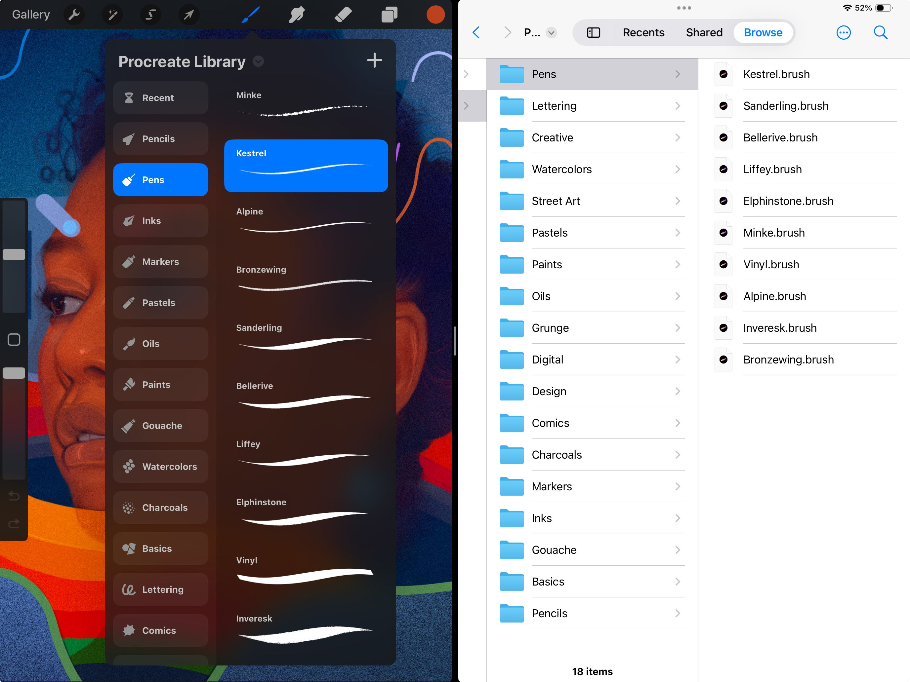
Bạn có thể nhập từng tệp .brush riêng lẻ bằng cách đưa chúng vào một thư mục bộ cọ trong ứng dụng Files. Bạn có thể sao chép, di chuyển và nhân bản cọ cũng như thư mục trong Files, và mọi thay đổi sẽ được phản ánh trong Procreate.
Cách hệ thống Brushes tương tác với ứng dụng Files
Because Procreate's Brushes system is now integrated with the iPad's Files app, when you make changes to brushes in Procreate the changes will also be reflected in Files, and vice versa. As you can see in the video below, changing files in the Files app also changes the files in the Procreate Brushes interface, after a moment:
Tạo và nhập thư viện cọ
Chạm vào nút ở góc trên bên phải khi đang ở giao diện thư viện cọ để mở menu ngữ cảnh.
Tạo một thư viện cọ mới
Tạo một thư viện cọ mới trong khu vực lưu trữ đang chọn (iCloud hoặc On My iPad).
Nhập từ Files
Nhập một thư viện cọ từ ứng dụng Files. Sau khi nhập, nó sẽ được lưu trong khu vực lưu trữ đang chọn (On My iPad hoặc iCloud Drive).
Quản lý từng thư viện cọ của bạn
Chạm giữ một thư viện cọ khi đang ở giao diện tổng quan để mở menu ngữ cảnh:
Đổi tên thư viện cọ. Việc này sẽ thay đổi tên trong cả Procreate và ứng dụng Files.
Xuất thư viện cọ để bạn có thể chia sẻ nó với ứng dụng khác hoặc qua Files.
Bạn cũng có thể kéo thả một thư viện cọ đến vị trí khác trong danh sách, hoặc kéo nó ra khỏi Procreate và thả vào Files để xuất.
Duplicate (Nhân đôi)
Nhân bản thư viện cọ trong khu vực lưu trữ hiện tại, tạo ra một bản sao hoàn toàn độc lập.
Xóa thư viện cọ này. Lưu ý rằng việc xóa là vĩnh viễn và sẽ gỡ bỏ thư viện cọ khỏi cả Procreate và ứng dụng Files.
Tìm kiếm cọ (Brush Search)
Vuốt xuống từ đầu thư viện cọ, ở bất kỳ giao diện nào, để mở Brush Search:
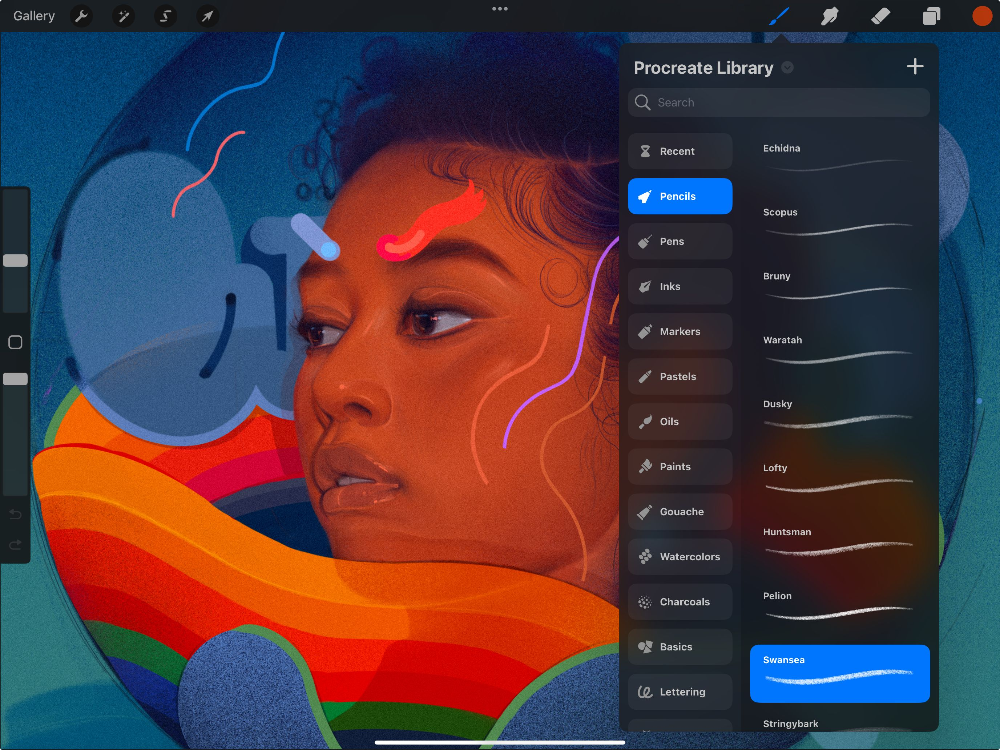
Bắt đầu gõ tên cọ mong muốn, và các kết quả khớp sẽ xuất hiện bên dưới ô tìm kiếm:
Ô nhập tìm kiếm
Nhập nội dung tìm kiếm tại đây, dùng một phần hoặc toàn bộ tên cọ/bộ cọ mà bạn còn nhớ.
Kết quả cọ
Các cọ khớp trong thư viện cọ hiện tại sẽ xuất hiện tại đây.
Kết quả từ các thư viện khác
Các kết quả khớp từ các thư viện cọ khác sẽ xuất hiện tại đây.
Kết quả bộ cọ
Các bộ cọ khớp với nội dung tìm kiếm sẽ xuất hiện tại đây.
Chạm vào một kết quả để kích hoạt cọ, bộ cọ hoặc thư viện. Chạm giữ vào một cọ để hiện tùy chọn sao chép cọ đó vào thư viện đang hoạt động, chuyển thẳng đến bộ cọ chứa nó, hoặc chia sẻ cọ.
Chạm Cancel ở góc trên bên phải để ẩn ô tìm kiếm và quay lại thư viện cọ hiện tại.
Cọ gần đây và cọ được ghim
Truy cập các cọ vừa dùng, hoặc ghim những cọ yêu thích để luôn sẵn sàng sử dụng.
Cọ gần đây (Recent Brushes)
Tìm các cọ Recent ở đầu danh sách bộ cọ. Truy cập các cọ này bằng cách chạm Paint, Smudge hoặc Erase rồi chạm Recent. Tối đa tám cọ riêng lẻ sẽ tự động được thêm vào bộ Recent khi bạn chọn và sử dụng chúng.
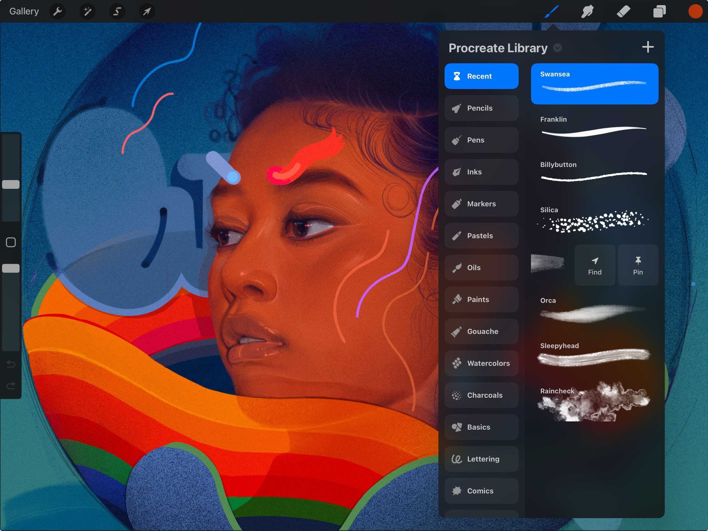
Để tìm bộ cọ gốc của một cọ trong Recent, vuốt sang trái trên cọ đó rồi chạm nút Find. Việc này sẽ đưa bạn đến bộ cọ chứa nó và làm nổi bật cọ đang kích hoạt.
Cọ được ghim (Pinned Brushes)
Để ghim một cọ, vuốt sang trái trên cọ trong bộ Recent và chạm nút Pin. Việc này sẽ giữ cọ cố định ở đầu bộ Recent. Bạn dễ dàng nhận diện cọ được ghim nhờ biểu tượng ghim ở góc trên bên phải. Để bỏ ghim, vuốt sang trái trên cọ và chạm nút Unpin.
Các nhóm bộ cọ
Khám phá 18 bộ cọ thủ công mới tạo nên cốt lõi của thư viện cọ Procreate. Luôn có một cọ và một nhóm phù hợp với mọi phong cách.
Một số cọ của Procreate rất chân thực. Một số khác lại đầy huyền ảo. Ý tưởng đằng sau các cọ này là mang đến cho bạn đa dạng công cụ hữu ích, từ thực dụng đến mang tính thử nghiệm.
Dưới đây là tóm tắt từng bộ cọ. Hãy thử nghiệm các cọ khác nhau để khám phá những gì có thể làm. Tìm hiểu đa dạng hiệu ứng mà bạn có thể đạt được và điều gì phù hợp nhất với bạn.
Thư viện Procreate (Procreate Library)
Pencils
Tuyển tập các loại chì từ than chì nhẹ/cứng đến rất mềm, mỗi loại có kết cấu giấy riêng và phản hồi theo độ nghiêng.
Pens
Bộ sưu tập cọ này gồm các công cụ chính xác như bút bi và bút đầu nhọn, cùng các công cụ biểu cảm hơn như bút lông và ngòi mòn, gãy.
Inks
Những cọ mang đến cho họa sĩ vô số hiệu ứng nét mực sáng tạo, từ vết bắn kiểm soát bằng lực nhấn trên một đường nét đến nét cọ kiểu sumi-e rộng.
Markers
Các cọ cho phép tích tụ mực trên khung vẽ, đồng thời vẫn thể hiện được sợi xơ của chính bút dạ.
Pastels
Các cọ có độ dày và hạt khác nhau, tạo ra nét vụn nhiều màu với các tùy chọn mô phỏng hành vi từ sáp dầu đến sáp màu đơn giản.
Oils
Cung cấp các nét cọ đậm chất hội họa cùng khả năng nhòe và pha trộn màu trên khung vẽ.
Paints
Mỗi cọ trong số này tận dụng nhiều kết cấu và hình dáng dấu (stamp) để tạo ra các hiệu ứng chất liệu ướt khác nhau.
Gouache
Những cọ này mang đến dải dấu cọ từ trong suốt đến đặc như loại chất liệu độc đáo này có được trong thế giới thực.
Màu nước (Watercolors)
Các cọ ướt tạo hiệu ứng màu nước trong suốt, phù hợp cho các lớp quét lớn, chồng lớp màu và nhiều kiểu cạnh nét.
Than chì (Charcoals)
Than chì dạng thanh dày, than liễu mảnh hơn để vẽ, cùng một số tùy chọn lấy cảm hứng từ carbon khác, mỗi loại mang nhiều hiệu ứng có thể kiểm soát bằng lực nhấn và độ nghiêng.
Basics
Bộ cọ sạch sẽ, đơn giản, chủ yếu có dạng bo tròn. Hữu dụng trên Paint, Smudge và Erase, là điểm khởi đầu tốt nếu bạn quen với phần mềm vẽ kỹ thuật số khác.
Thư pháp (Lettering)
Các cọ phù hợp cho thư pháp uyển chuyển và chính xác, được hỗ trợ bởi khả năng ổn định tăng cường.
Comics
Cọ dành cho truyện tranh hoặc phong cách manga với mực, halftone (bản điểm) và hơn thế. Bộ này được thiết kế để quy trình vẽ truyện nhanh và dễ hơn.
Design
Sạch sẽ và được thiết kế dành riêng cho các dự án thiên về kỹ thuật. Bộ này có những cọ có thể hữu ích cho dự án kiến trúc, bản vẽ, đánh dấu, v.v.
Grunge
Các cọ gai góc và giàu kết cấu cho nhiều bề mặt, hiệu ứng thú vị và sắc nét.
Nghệ thuật đường phố (Street Art)
Đậm kết cấu và rực rỡ, những cọ này rất biểu cảm nhưng cũng có thể dùng cho những điểm nhấn màu tinh tế.
Digital
Bộ cọ thiên về hình học, cho phép bạn tạo ra các hình khối vừa gọn gàng vừa giàu kết cấu.
Sáng tạo (Creative)
Các cọ cho phép bạn tạo ra những nét thú vị và bất thường một cách nhanh chóng, biểu cảm.
Thư viện cổ điển (Classic Library)
Phác thảo (Sketching)
Được thiết kế cho vẽ thực tế, lập kế hoạch, phác thảo và nghiên cứu nhanh. Các cọ này mô phỏng bút chì than chì, bút chì kỹ thuật, pastel và sáp màu họa sĩ.
Drawing
Bộ cọ này cung cấp nhiều cọ kết xuất cho vẽ nghệ thuật. Các cọ mang sự kết hợp đa dụng giữa chất liệu ướt và khô, lý tưởng cho nghiên cứu nhanh và vẽ theo người mẫu.
Inking
Lý tưởng để dọn dẹp tác phẩm và vẽ theo phong cách đề cao mực như sumi-e. Các cọ này gồm nhiều kiểu mực-cọ, bút kỹ thuật, bút dạ, bút gel và hiệu ứng mực khô.
Vẽ màu (Painting)
Các cọ này bao gồm nhiều hiệu ứng vẽ chân thực và kỹ thuật số. Tuyển chọn này phủ các chất liệu từ acrylic, stucco đến dầu. Chúng mang đến nhiều hành vi cọ, từ độ rìa của cọ cũ đến vết loang của cọ dầu ngậm tinh dầu.
Nghệ thuật (Artistic)
Kết cấu là trọng tâm của bộ cọ đầy hấp dẫn này. Các cọ mang dải hiệu ứng từ loãng đến vón cục. Chúng tích tụ hoặc bóc tách màu để lộ kết cấu giấy hoặc khung vẽ bên dưới.
Thư pháp (Calligraphy)
Tất cả các cọ này đều bật Streamline. Điều này giúp người viết thư pháp tạo ra các hình dáng mượt mà, đều đặn. Chúng có nhiều kết cấu với độ phản hồi đặc biệt với lực nhấn.
Súng phun (Airbrushing)
Thành phần chủ lực của nghệ thuật kỹ thuật số cổ điển. Bộ súng phun cho phép họa sĩ tạo màu tinh khiết và dải chuyển màu mượt mà nhanh chóng.
Kết cấu (Textures)
Các cọ này tạo vùng kết cấu lớn một cách nhanh chóng. Bộ đa dụng này cung cấp các kết cấu thực tế độc đáo và đa dạng, mô phỏng nhiều bề mặt và hoa văn.
Trừu tượng (Abstract)
Bộ cọ vui nhộn này cho thấy khả năng độc đáo của Brush Studio đa năng. Bao gồm các cọ đổi màu, tạo hiệu ứng khói và sinh ra hình khối hỗn loạn. Đây là minh chứng tốt cho những hiệu ứng bất ngờ mà việc tùy chỉnh cọ có thể đạt được.
Than chì (Charcoals)
Dải cọ than chì chân thực này lý tưởng cho nghiên cứu, chân dung và vẽ theo người mẫu.
Nguyên tố (Elements)
Những cọ hiệu ứng kỳ ảo này kết xuất ra khói, lửa, nước, mây và hơn thế một cách thuyết phục.
Sơn xịt (Spraypaints)
Nhiều hiệu ứng bắn và xịt chân thực có sẵn trong bộ cọ đa năng, đậm chất bụi bặm này.
Vật liệu (Materials)
Nhiều cọ Material (vật liệu) đặc trưng với tính kim loại và độ nhám, được tạo cho vẽ 3D (3D Painting). Cộng thêm tuyển chọn cọ để retouch chi tiết như tóc, râu, nhiễu (noise) và nhiều kiểu kết cấu da nhằm tăng tốc tác phẩm concept của bạn.
Vintage
Bộ cọ lấy cảm hứng cổ điển với nhiều kết cấu hoài cổ và thành phần thiết kế rải rác cho tác phẩm của bạn.
Độ sáng (Luminance)
Cọ đầy ấn tượng này tận dụng tối đa sức mạnh của nghệ thuật kỹ thuật số. Nó tạo ra dải hiệu ứng ánh sáng sống động, từ xung lực đến thiên hà, lấp lánh và bokeh.
Công nghiệp (Industrial)
Được thiết kế để thêm kết cấu bụi bặm chân thực vào tác phẩm. Bộ Industrial là nơi bạn tìm thấy hiệu ứng bê tông, kim loại, đá và rỉ sét.
Organic
Bộ cọ Organic mang mọi thứ tự nhiên. Nó gồm dải cọ rải (scatter) để thêm kết cấu cỏ, lá và vỏ cây cho tác phẩm concept. Bộ cũng cung cấp cọ mô phỏng nét tạo bởi chất liệu thủ công, cho phép bạn viết mực bằng bút sậy, vẽ bằng tre hoặc vẽ bằng cọ lông chồn.
Water
Bộ này cung cấp một số cọ màu nước chân thực. Có cả cọ dấu (stamp) cho văng, hất, vết và nhễu.
Kiến thức cơ bản về thư viện cọ
Tìm hiểu cách tự tạo cọ và bộ cọ, nhập bộ do người khác tạo, giữ thư viện ngăn nắp và chia sẻ tác phẩm của bạn.
In this section we'll explore the controls for managing individual Brushes and organizing brush sets within a brush library.
Tạo cọ và bộ cọ
Chạm nút ở góc trên bên phải của Brushes để mở menu ngữ cảnh cho phép tạo và nhập cọ cùng bộ cọ mới.
Tạo cọ mới
Chạm vào đây để tạo cọ mới trong bộ cọ hiện tại. Bạn sẽ ngay lập tức được đưa vào Brush Studio để tạo cọ.
Tạo bộ cọ mới
Chạm vào đây để tạo bộ cọ mới trong thư viện cọ hiện tại. Nhập tên bộ mới bằng bàn phím iPadOS, sau đó chạm Apply để xác nhận hoặc Cancel để hủy bỏ.
Nhập từ Files
Chạm vào đây để nhập cọ, bộ cọ hoặc thư viện cọ từ ứng dụng Files. Tệp cọ dùng đuôi .brush, bộ cọ dùng .brushset, thư viện cọ dùng .brushlibrary.
Để thêm cọ mới, chạm nút ở góc trên bên phải của thư viện cọ rồi chạm Create new brush.
Tìm hiểu thêm về việc tạo cọ trong Brush Studio.
Chỉnh sửa cọ
Thay đổi đa dạng thiết lập trên bất kỳ cọ nào đã có.
Để chỉnh sửa cọ đã có, chạm cọ để chọn, rồi chạm thêm lần nữa để mở Brush Studio.
Tìm hiểu thêm về chỉnh sửa cọ đã có trong Brush Studio Settings.
Sắp xếp cọ và bộ cọ
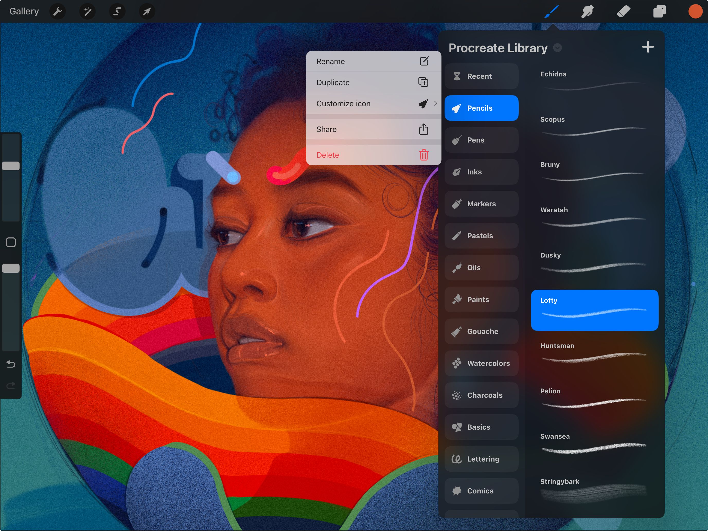
Để nhân bản cọ, vuốt sang trái trên cọ và chạm Duplicate.
Để nhân bản bộ cọ, chạm hai lần vào bộ cọ rồi chạm Duplicate. Một bản sao y hệt sẽ xuất hiện bên dưới bộ gốc.
Đổi tên cọ hoặc bộ cọ
Đặt cho cọ và bộ cọ những tên dễ nhớ để giữ thư viện ngăn nắp.
Để đổi tên cọ, chạm và giữ cọ trong giao diện Brushes, rồi chạm Rename.
Để đổi tên bộ cọ, chạm hai lần (hoặc chạm và giữ) rồi chọn Rename. Bạn cũng có thể Share (xuất) bộ cọ từ đây, hoặc đặt cho nó một biểu tượng từ thư viện biểu tượng của chúng tôi.
Nhân bản cọ hoặc bộ cọ
Tạo bản sao ngay lập tức của cọ hoặc bộ cọ đang chọn, để bạn có nhiều bản sao có thể di chuyển tùy ý.
Để nhân bản cọ hoặc bộ cọ, chạm giữ nó và ấn Duplicate trong menu hiện ra.
Tùy chỉnh biểu tượng (chỉ bộ cọ)
Chọn từ các biểu tượng thú vị để gán cho một trong các bộ cọ của bạn.
Chạm giữ một bộ cọ và chọn Customize icon để chọn từ các biểu tượng đi kèm.
Chia sẻ cọ hoặc bộ cọ
Chia sẻ cọ tùy chỉnh và bộ cọ với những người dùng Procreate khác.
Chia sẻ một cọ riêng lẻ bằng cách vuốt sang trái trên hình thu nhỏ của cọ và chạm Share. Procreate sẽ đóng gói cọ thành một tệp .brush để bạn chia sẻ.
Chia sẻ bộ cọ tùy chỉnh bằng cách chạm hai lần và chọn Share. Chọn nơi lưu cho tệp .brushset.
Kéo thả cọ và bộ cọ
Chạm và giữ cọ hoặc bộ cọ bạn muốn di chuyển. Sau một lát, nó sẽ ‘nhấc lên’ và mờ đi một chút. Kéo nó đến vị trí mới trong danh sách và nhấc ngón tay để thả.
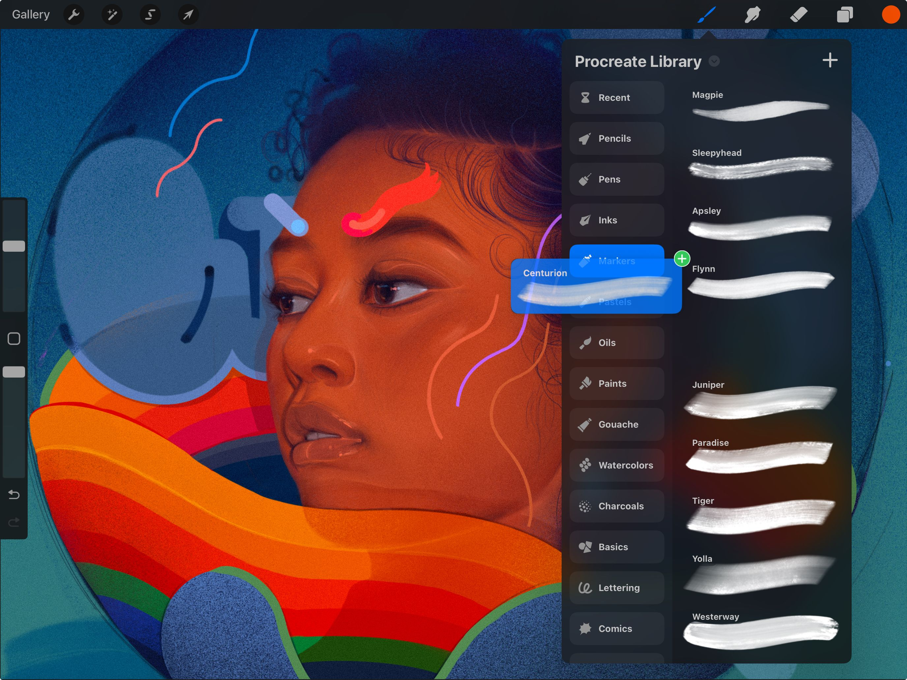
Bạn cũng có thể chạm vào bộ cọ đích bằng ngón tay khác trong lúc đang giữ cọ, để chuyển sang bộ đó, cho phép bạn thả cọ vào bên trong; việc này sẽ chuyển cọ từ bộ gốc sang bộ mới.
Để sao chép cọ từ bộ cọ này sang bộ khác, chạm và giữ cọ để nhặt nó lên, sau đó di chuyển nó qua tiêu đề bộ cọ đích và nhấc ngón tay để thả một bản sao vào bộ đó.
Để di chuyển nhiều cọ hoặc bộ cọ, nhặt mục đầu tiên như trên và kéo nó. Một biểu tượng xanh sẽ xuất hiện. Bằng ngón tay khác, chạm bất kỳ mục nào khác muốn thêm vào nhóm. Một con số sẽ xuất hiện cạnh biểu tượng đếm số mục trong nhóm. Giờ bạn có thể thả nhóm vào vị trí mới trong danh sách.
Di chuyển cọ và bộ cọ giữa các thư viện cọ
Để di chuyển cọ hoặc bộ cọ từ thư viện cọ này sang thư viện khác, chạm và giữ cọ hoặc bộ cọ để nhặt lên.
Giờ hãy dùng tay kia chụm vào trong trên giao diện cọ (hoặc chạm vào tên thư viện → Back to libraries), sau đó chạm vào thư viện bạn muốn thả bộ cọ vào.
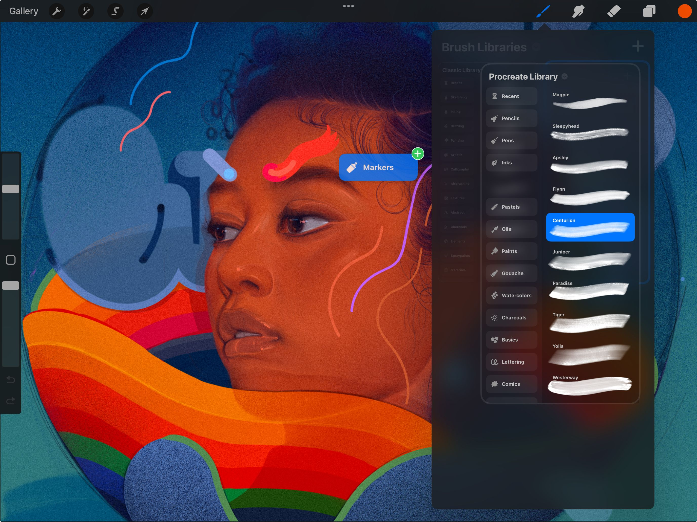

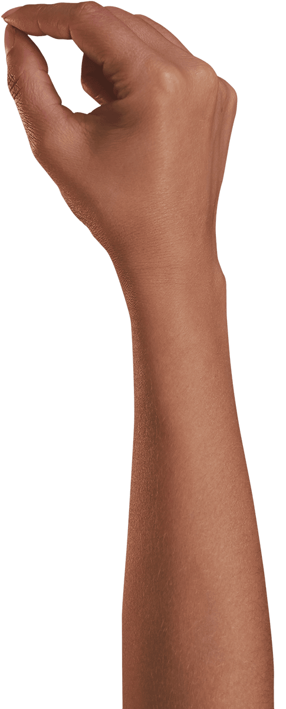
If you're holding a brush, hover the brush over or tap on the destination set with another finger and then drop the brush within.
If you're holding a set, simply drag it into the position on the list you'd like and release it to move it across.
Bạn cũng có thể di chuyển hàng loạt cọ và bộ cọ giữa các thư viện. Chạm giữ một mục để nhặt lên, rồi chạm các mục khác (cọ nếu đang di chuyển cọ, bộ nếu đang di chuyển bộ) bằng ngón tay khác để thêm vào nhóm đang giữ.
Dùng cùng phương pháp như trên để đi đến đích mới, và thả ra khi hài lòng với vị trí mới.
Xóa cọ hoặc bộ cọ
Dọn dẹp thư viện cọ bằng cách xóa các bản sao không cần và cọ tùy chỉnh không dùng đến.
Để xóa cọ, vuốt sang trái trên cọ và chạm Delete. Bạn sẽ được yêu cầu xác nhận trước khi xóa.
Để xóa bộ cọ tùy chỉnh, chạm hai lần vào bộ và chọn Delete.
Đặt lại cọ (Reset)
Để đặt lại cọ trong Procreate, bạn phải vào Brush Studio. Chạm hai lần vào một cọ trong giao diện Brushes, sau đó chạm About this Brush trong danh sách bên trái, rồi chạm Reset Brush và xác nhận để đưa cọ về trạng thái trước đó.
Đọc thêm về điều này trong phần Brush Studio Settings.
Import
Tải và nhập các cọ và bộ cọ mới hữu ích vào Procreate.
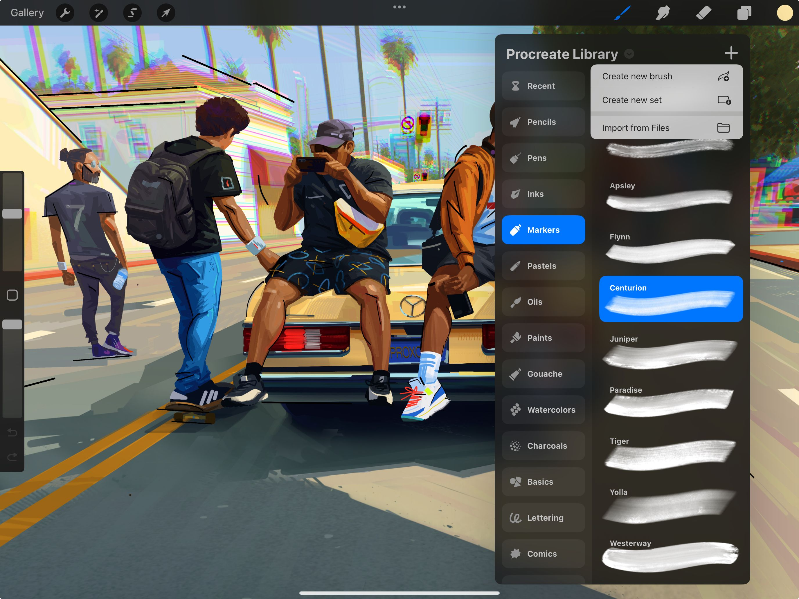
Trong thư viện cọ, chạm nút để mở menu ngữ cảnh. Chạm Import from Files để nhập tệp .brush, .brushset hoặc .brushlibrary từ ứng dụng Files.
Một bộ cọ được nhập sẽ được thêm lên đầu thư viện cọ của bạn.
Bạn cũng có thể nhập cọ mới từ bên ngoài ứng dụng. Tìm một tệp .brush, .brushset hoặc .brushlibrary mới trong Files. Khi bạn chạm vào tệp, nó sẽ hoặc tự động nhập vào Procreate, hoặc một lời nhắc nhập cọ mới vào Procreate sẽ hiện ra.
Một bộ có tên Imported sẽ được tạo khi bạn nhập một cọ đơn lẻ. Thư mục Imported sẽ nằm ở cuối danh sách bộ cọ, và sẽ có một thư mục tương ứng trong ứng dụng Files.
Nếu bạn nhập một bộ cọ theo cách này, nó sẽ xuất hiện ở đầu thư viện cọ.
Still have questions?
If you didn't find what you're looking for, explore our video resources on YouTube or contact us directly. We’re always happy to help.